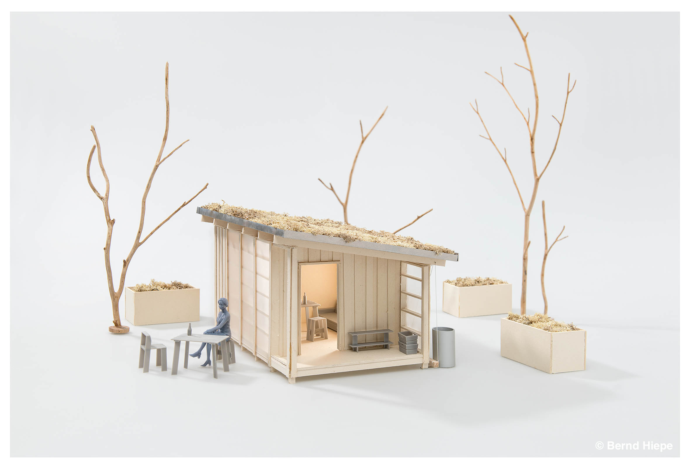
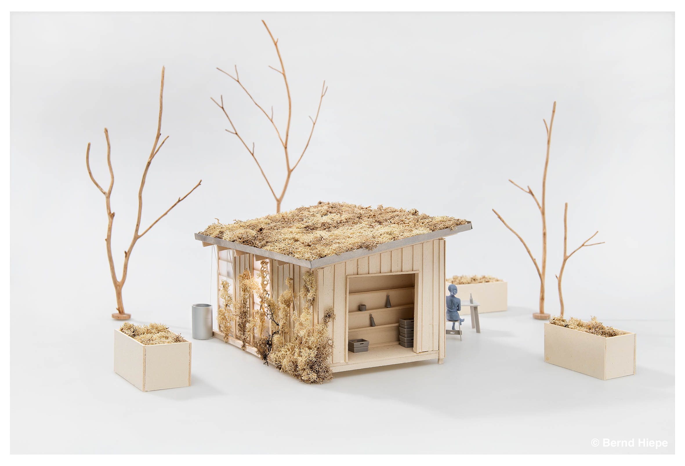
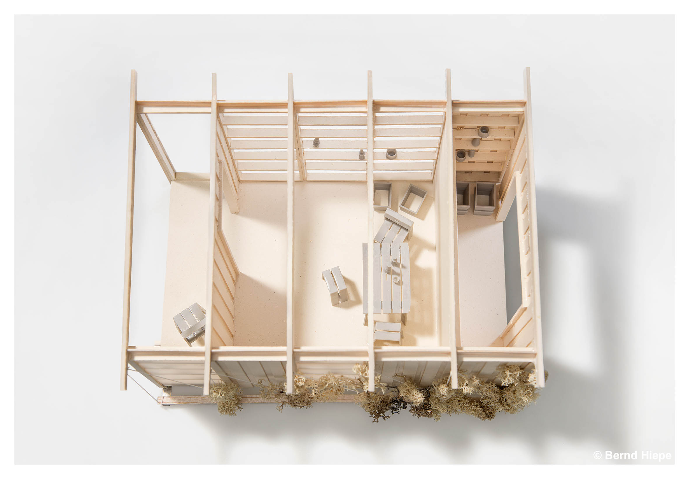
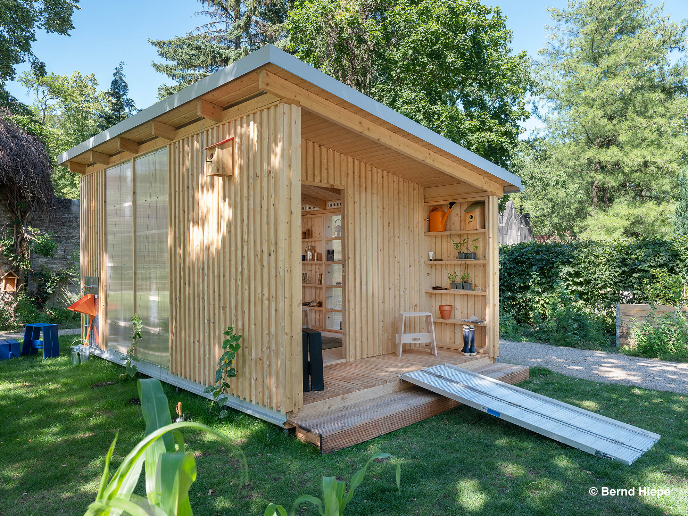
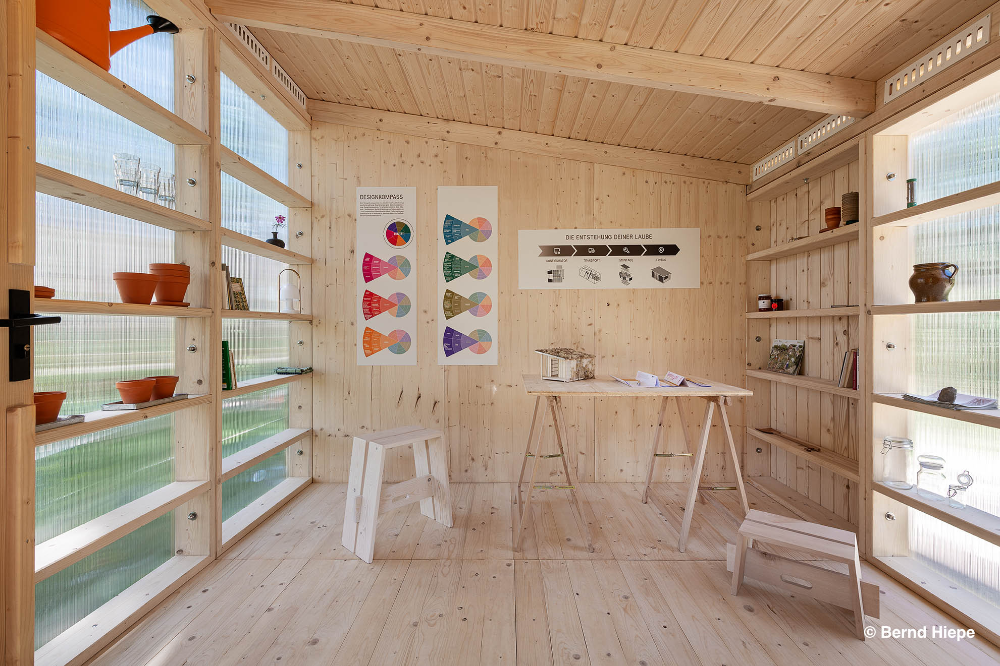
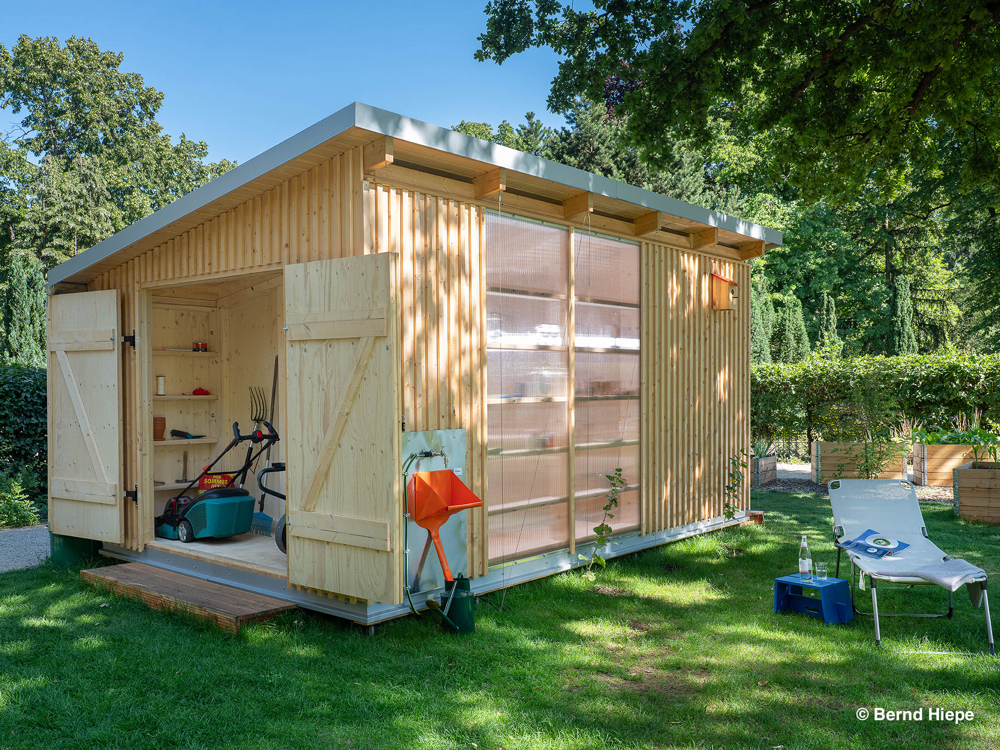
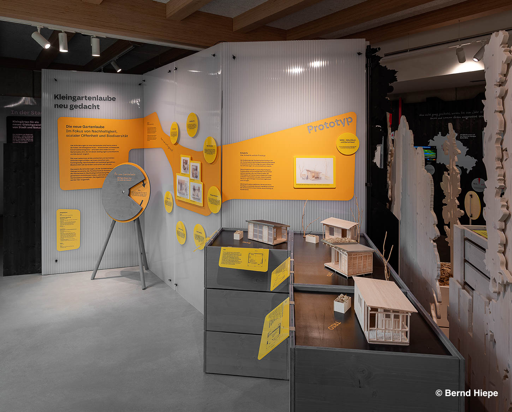
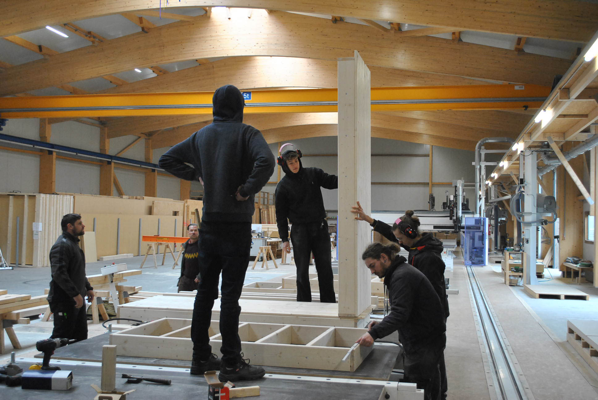
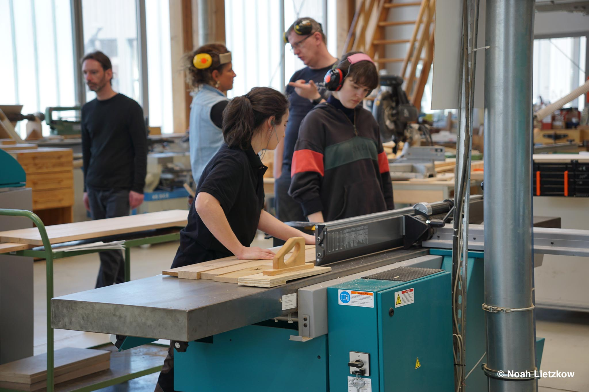
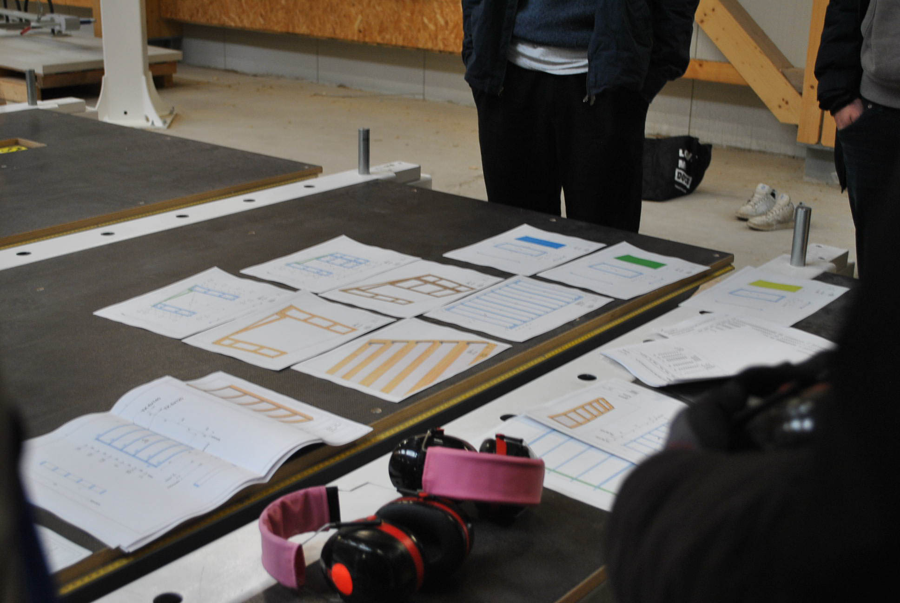

NARA
Das Projekt „Laube im Fokus der Nachhaltigkeit, sozialen Themen und der Biodiversität “ ist ein Kooperationsprojekt, das zum Ziel hat, einen realistischen Entwurf zu entwickeln. Es stehen Kriterien wie soziale Gerechtigkeit, Umwelt- Klimafreundlichkeit, Biodiversität und „universales Design“.
Team
Dennis Zwehl, Noah Lietzkow, Benjamin Friese, Annie Fürstenberg, Aljoscha Fischer, Noah Hüther, Maximilian Pesch, Johanna Funke, Ellen Schleyer, Isa von Ohlen
Mentor
Prof. Hermann Weizenegger (FH Potsdam), Aylin Kayser
Year
2023-25
Press
🔗 „Datsche de luxe: In Neukölln wird die Laube der Zukunft vorgestellt“ – Berliner Zeitung, 14.05.2025 🔗 „Die Gartenlaubenreform: Prototyp NARA zegt, was Design für den Kleingarten der Zukunft tun kann“ – Cee Cee Newsletter, 2025📺 Smarte Gartenlaube entwickelt – rbb24 Abendschau, 17.05.2025, 19:30









